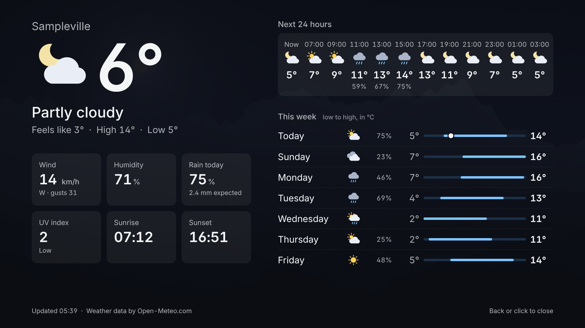

Photos, the time, the weather
Albums from Synology Photos or a folder on the Pi, behind a clock you can read from the sofa. Photos can drift and zoom slowly without anything being cut off, upright ones appear two at a time, and the slideshow can start each day with what you took on that day in earlier years.
- Weather for the week, rain about to start, air quality and pollen
- Favourites that come round more often, and a map of where a photo was taken
- A dim clock at night, by the clock or from sunset to sunrise
